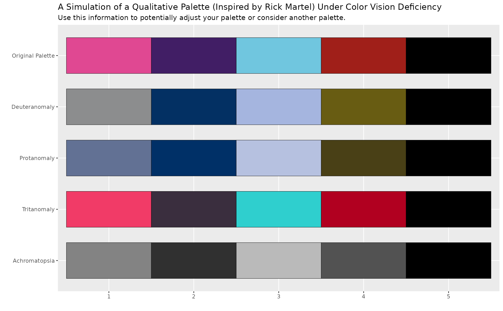

These are various color vision deficiency simulation tools for evaluating color palettes and how colorblind-friendly they are.
Value
deut() takes a palette from this package (or a character vector of valid
hex triplets) and returns their adjusted hex triplets under conditions of
deuteranomaly.
prot() takes a palette from this package (or a character vector of valid
hex triplets) and returns their adjusted hex triplets under conditions of
protanomaly.
trit() takes a palette from this package (or a character vector of valid
hex triplets) and returns their adjusted hex triplets under conditions of
tritanomaly.
achrom() takes a palette from this package (or a character vector of valid
hex triplets) and returns their adjusted hex triplets under conditions that
simulation complete achromatopsia.
cvdplot() takes a palette from this package (or a character vector of valid
hex triplets) and returns a graph that juxtaposes the palette vis-a-vis what
it would look like under varying conditions of color vision deficiency
(deuteranomaly, protanomaly, tritanomaly, and complete achromatopsia).
Details
These functions take valid hex triplets of any length or a character that
matches one of the palettes available in this package. Check the palettes
data frame for those.
The functions I write are inspired by colorspace, but have a slight difference in the threshold used to determine whether an sRGB color channel should be linearized using the linear or nonlinear portion of the sRGB transfer function. The original WCAG 2.0 specification used a threshold of .03928, which colorspace uses. This was apparently in error, per a WCAG 2.1 errata document from 22 Feb. 2022. The revised value is .04045, which is used here. This difference is negligible for most practical purposes and should affect only a narrow range of low-intensity channel values.
The functions simulate the palettes under maximum conditions of color vision deficiency. Future extensions of these functions will likely allow the user to specify the severity of color vision deficiency they want to simulate. For now, the simulations assume the maximum severity of deuteranomaly, protanomaly, tritanomaly, and achromatopsia.
I'm using "achromatopsia" here, though with some hesitation. I'm reluctant to say this is a physiologically accurate simulation of complete achromatopsia. It is certainly a visual simulation of grayscale and may approximate a complete loss of chromatic information using photopic relative luminance. These terms can be used interchangeably, but with important caveats.
Examples
deut("q-martel")
#> [1] "#8C8D8E" "#033063" "#A5B5DF" "#685C12" "#000000"
prot("q-martel")
#> [1] "#627194" "#003067" "#B6C1E0" "#494016" "#000000"
trit("q-martel")
#> [1] "#F13B67" "#3A2E3E" "#2FCFCE" "#B10020" "#000000"
achrom("q-martel")
#> [1] "#838383" "#303030" "#BABABA" "#525252" "#000000"
cvdplot("q-martel")
